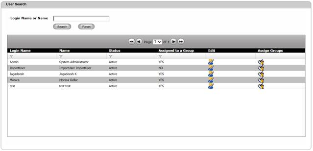

This section describes about searching for the login name.
To Search users
1. Navigate User Administration>>User Search from the DCTrackMobileWeb menu bar.
You will see the User Search screen.
2. Enter the information in the requested fields.
3. Click Search button to search for the user or click Reset button to refresh page fields.

Figure 176: User Search Screen-Successful Search
|
Copyright © 2019 Hewlett
Packard Enterprise,v5.2.
|